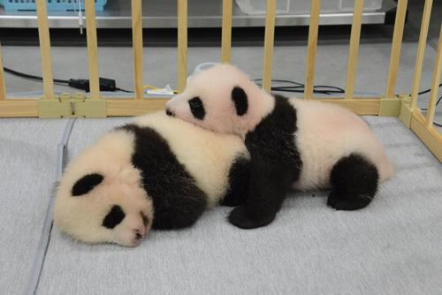

About
- M.Ogasawara
- nakanoshima,Toyohiraku, Sapporo, Hokkaido 062-00xx Japan
- tel: 080-0000-0000
- url: www.xxxxxx.jp
- mail: xxx@xxxxxx.jp
豊平区住民になって、31年になりました。豊平川を挟んで隣接している中島公園周辺にはとて も愛着があります。４月末日で前職を退職し、８月24日JAVAプログラミング科に入学し、 毎日悪戦苦闘しています。このページでは、最近、私を元気くれるアイテムをいくつか紹介いた します。気に入っても「いいねボタン」はありませんから、直接声をかけてくださいね。
favorite1
#今年は、Tokyo2020オリンピックが開催されました。物議を醸す点が多々ありましたが、スポーツ は応援したくなる魔力がありますね。冒頭の写真は、我が家の前を駆け抜けた男子マラソンランナーです。 スケートボード、スポーツクライミング、サーフィンなど新競技が採用され、10代の選手が躍動したのが 印象的です。開会式で話題になったピクトグラムで私の注目競技を表現してみました。
favorite2

#金子晃之さん。私のExcel先生です。最近、登録者数90万人を突破した そうです。わかりやすくお勧めです。

#MBLで大活躍の大谷選手。毎試合チェックしています。ホームランダービー 出場時にゲレロ.Jrさんと。
- 
#2021年6月23日に誕生した双子パンダ。日に日に愛らしさが増していきます。

#大谷選手所属エンゼルスののマドン監督。この方の力で一年を通して二刀流で 頑張れている感じがします。チームも明るくて好きな選手が増えました。
-
#2018年配信、”The Call”という番組から「MyChoice」。SHINEEのtaeminとUVの コラボです。SHINEEのファンなのですが、これは結構笑えます。
-
#2021年６月６月配信”Your Song My SOng"から「My House」。2PM Junhoさんとキムヘジュンさんのコラボです。このコラボシリーズでまともに歌い切った歌手を見たことが ありません。Junhoさんの必死な感じがやみつきになります。
News
- 2021.9.22
- 【大谷翔平選手】45号ソロホームラン。アストロズ戦、2番指名打者出場の第３打席でした。
- 【上野動物園双子パンダ】6月23日に誕生したパンダはよちよち歩きを始めました。
- 2021.9.14
- 【プログラミング科初テスト】6回のテストの1回目を受けました。
- 2021.8.24
- 【祝入学】北関東学院JAVAプログラミング科入学しました。
- 2021.8.8
- 【オリンピック男子マラソン】札幌で開催。大迫傑選手、第6位。